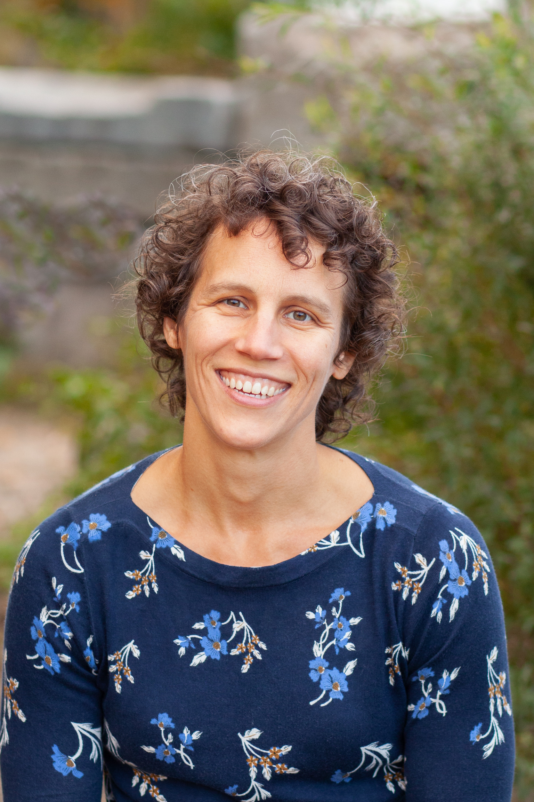

Your mission is urgent. Your plate is full. You've got no time to waste.
But you need to bring in more money.
That's where I come in.
Your mission is urgent. Your plate is full. You've got no time to waste.
But you need to bring in more money.
That's where I come in.
One nonprofit I consulted with went from $213,000 to $770,000 raised annually from individual donors. Another nonprofit I worked with went from $530,000 raised to over a million dollars.
Effective fundraising isn't a black box, and I can help you get there. It takes work, but you won't be alone. And you'll be delighted by the results!
My areas of expertise are:
I started working with Valerie in June. Just six months later, our year-end campaign brought in a full 80% more than the previous year! Valerie hit the ground running and gave me skills and confidence to connect with donors in a way that's heartfelt and effective. This work has supercharged our supporters' enthusiasm and investment in our mission. Plus, she is a delightful person to work with. Everyone wins!
When we hired Valerie, she recommended significant changes to our fundraising model that frankly, as a Board, we felt somewhat hesitant about. Despite this trepidation, we followed Valerie’s advice and the results have been outstanding. The work she’s done with our ED, Board, and development team created an inflection point for the organization - and in the midst of the pandemic, no less. I’d recommend Valerie to any nonprofit that wants an effective, data-driven approach to fundraising.
Valerie was such a pleasure to work with. She quickly became a trusted advisor to our entire development team - knowledgeable, insightful, and kind. Her scope of work grew the longer she was with us, as I realized all she had to offer. She started out working with us on major gifts and donor comms, and ended up doing trainings in branding, Getting Things Done, and OD/team-building. Above all, her advice was practical - she has the evidenced-based knowledge of best practices, combined with the "on the ground in a small team with big ambitions" experience, that make her a real powerhouse. I'm so glad that I chose to work with Valerie.
Valerie's guidance works. We hired her to create a strategic fundraising plan and to work with us to implement it. With Valerie's coaching and through following the plan, our donations from individuals have nearly quadrupled, from $200,000 to almost $800,000! Additionally, Valerie's managed a dozen or more projects to strengthen our board governance processes, including trainings. Though she's a consultant, she's part of the team here, and I can't imagine where we'd be without her.
Valerie offers a wonderful combination of fundraising expertise, friendliness, and the ability to make things happen. She worked with the Board of Directors to give us the tools and confidence to be more effective relationship-builders for First Place. Thanks to Valerie, we blew past our goals in both Board giving and getting, which was thrilling for all of us! Valerie is practical, reliable, and great at coaching people to get results. A pleasure to work with!
